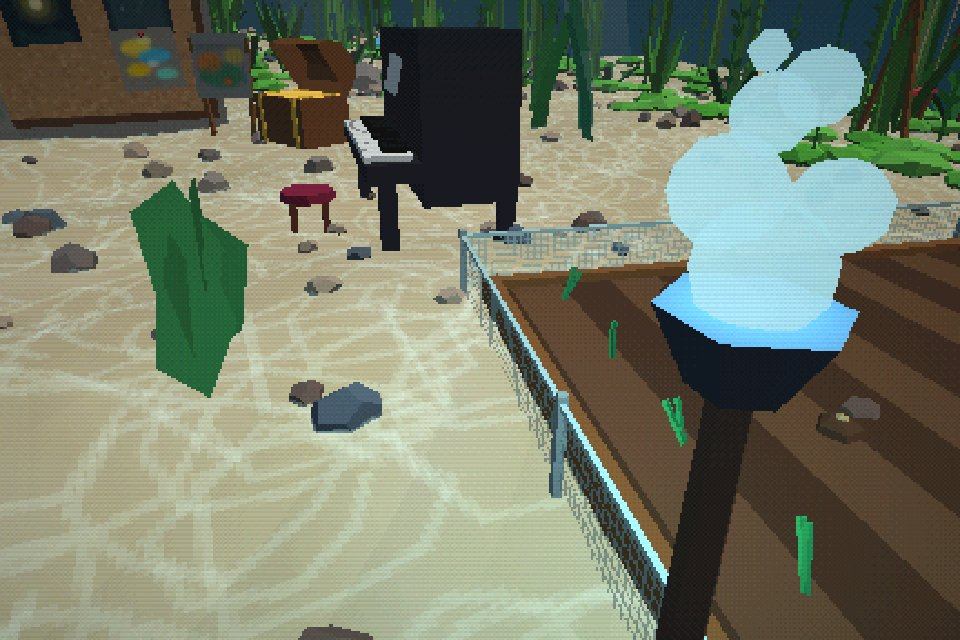

Para Jardinero Pepe: el campo derecho por dentro de la malla
30 de noviembre de 2026
Jardinero Pepe, aquí va la foto más de cerca que he podido sacar del huerto. Es el campo derecho, rodeado por su malla baja y transparente. Dentro hay zanahorias acuáticas en el surco 1, casi listas (les faltan una hora), y algas esferoides recién plantadas en el surco 2, que tardan unas 8 horas en crecer. Los demás surcos están vacíos por ahora.
Lo que más me interesa es si las algas crecen bien dentro de la malla. Todavía es pronto para saberlo: lo miraré cuando pasen unas horas. Si ves algo raro en la foto, dímelo.
